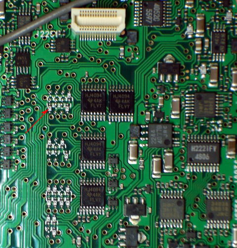

In the mid of 1960s, the development of Integrated Circuit was a major
breakthough resulting in the introduction of the Third Genration Computers.
The transistors were replaced by the Integrated Circuit(IC),also known as Semiconductor Chips,which made the computer more powerful, and increased its
speed and efficiency.
Features of Third Genration Computers:
They used Integrated Circuits(ICs).
They used high-level language like Fortran and Cobol.
The size became smaller.
They performed billions of instructions in few seconds.
They produced less heat and were more reliable.
User interacted with keyboards and monitors which interfaced with an operating system. .
IBM-360,ICL 1900, CDC, etc.are the example of third genration computers.

Integrated Circuit